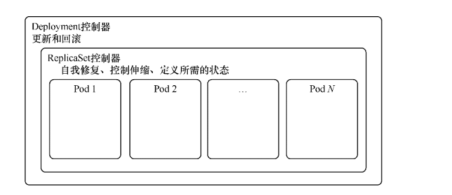

其他控制器¶
1.ReplicationController和ReplicaSet控制器¶
在早先版本的Kubernetes中，ReplicationController是最早提供的控制器，后来ReplicaSet控制器出现并替代了ReplicationController
在Deployment控制器出现后，ReplicationController和ReplicaSet控制器都很少再直接使用了。
虽然ReplicationController和ReplicaSet控制器都是基于Pod而设计的，增加了水平伸缩功能，提高了可靠性，但它们缺少在 其他复杂对象中具有更细粒度的生命周期管理功能。
在当前版本的Kubernetes中一般直接创建Deployment控制器，且由Deployment控制器自动托管ReplicaSet控制器，用户无须操心
ReplicaSet控制器，完全可以当它不存在。
再次看一下deployment与rs的图
虽然现在一般不再直接使用ReplicaSet控制器，但如果要直接使用ReplicaSet控制器也可以，其模板定义和Deployment控制器的类 似，如下所示。
apiVersion: apps/v1
kind: ReplicaSet
metadata:
name: examplereplicaset
spec:
replicas: 3
selector:
matchLabels:
example: replicasetfornginx
template:
metadata:
labels:
example: replicasetfornginx
spec:
containers:
- name: nginx
image: nginx:1.7.9
ports:
- containerPort: 80
因为直接创建的ReplicaSet控制器不能由Deployment控制器托管，所以ReplicaSet控制器也不具有滚动更新、版本查看和回滚等功 能。
Deployment控制器以ReplicaSet控制器为基础，是更高一级的概念，增加了更灵活的生命周期管理功能，如滚动更新和回滚。
Deployment控制器会维持指定数量的Pod副本，多退少补，时刻保持数量恒定。还可以对副本数量进行动态伸缩
Deployment控制器的历史记录与回滚其实是基于ReplicaSet控制器的，一个版本对应一个ReplicaSet控制器。